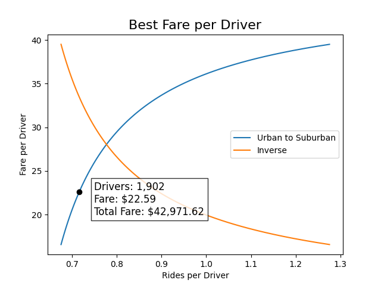

Challenge
Table of Contents
PyBer City Type Analysis
Overview
In this project we analyzed the fare, drivers and rides data from PyBer, a ride-sharing app company, and we created many charts to help us visualize the results. Thanks to our analysis, we can draw some conclusions that will help the company make decisions on how to improve its service.
Results
Our first impression with the data was that we had a very unbalanced distribution from one city type to another. The amount of drivers in the Urban areas is about thirty times more than in the Rural areas.

We can take a look at the Average Fare per Driver to get a better idea of the demand of rides on each city type. The rides in the Urban cities have a very low cost compared to the drives in the other city types.
| CityType | TotalRides | TotalDrivers | TotalFares | AverageFareperRide | AverageFareperDriver |
|---|---|---|---|---|---|
| Rural | 125 | 78 | $4,327.93 | $34.62 | $55.49 |
| Suburban | 625 | 490 | $19,356.33 | $30.97 | $39.50 |
| Urban | 1,625 | 2,405 | $39,854.38 | $24.53 | $16.57 |
Because the context from Rural to Urban areas may change a lot, we should start by using the Suburban areas as a better comparison point for both extremes.
Finding the Best Fare Price for Urban cities
Becuse the Urban to Rural data is very different, we will try to find the best fare price for the Urban city type by comparing it to the Suburban results, assuming that the relationship is linear.
import numpy as np import matplotlib.pyplot as plt # Creating lines from Urban to Suburban drivers = np.linspace(490, 2405, 100) rides = np.linspace(625, 1625, 100) fare_per_ride = np.linspace(30.97, 24.53, 100) fare_per_driver = np.linspace(39.50, 16.57, 100) rides_per_driver = rides / drivers # Find the index of the max total fare total_fares = drivers * fare_per_driver m = np.argmax(total_fares) point = rides_per_driver[m], fare_per_driver[m] driver_count = drivers[m] best_fare = total_fares[m] # Plotting file_path = "./snd.png" plt.plot(rides_per_driver, fare_per_driver, label="Urban to Suburban") plt.plot(rides_per_driver, np.flip(fare_per_driver), label="Inverse") plt.plot(point[0], point[1], "ko") plt.text( 0.75, 20, f"Drivers: {driver_count:,.0f}\nFare: ${point[1]:,.2f}\nTotal Fare: ${best_fare:,.2f}", fontsize=12, bbox = dict(facecolor="white", alpha=0.8), ) plt.title(f"Best Fare per Driver", fontsize=16) plt.ylabel("Fare per Driver") plt.xlabel("Rides per Driver") plt.legend() plt.savefig(file_path) print(file_path, end="")

We can see that we don’t need to reduce the overall number of drivers that much and the number of rides per driver barely changes, so we don’t expect to be low on available drivers for the amount of rides the Urban cities require.
From Urban to Rural or to other cities?
Now that we know how many drivers we can move out of the Urban cities, we should find which cities have the most drivers and which ones have the most rides.
We can take a look at the distribution of rides and drivers with a Box and Whiskers chart.

When is best to move the Drivers?
Finally, we can generate a time series chart to visualize the Total Fare by city type to try to find at which point in time is best to move drivers from one city type to another. This will help us minimize a reduction in Total Fare by the logistics of changing our current distribution of drivers.
| date | Rural | Suburban | Urban |
|---|---|---|---|
| 2019-01-06 | 187.92 | 721.60 | 1661.68 |
| 2019-01-13 | 67.65 | 1105.13 | 2050.43 |
| 2019-01-20 | 306.00 | 1218.20 | 1939.02 |
| 2019-01-27 | 179.69 | 1203.28 | 2129.51 |
| 2019-02-03 | 333.08 | 1042.79 | 2086.94 |

Summary
- Improve the distribution of drivers in the Urban cities by moving from cities with low rides and high drivers to cities with high rides and low drivers.
- Move drivers out of the Urban cities into Suburban cities and from Suburban to Rural as the distributions are closer together.
- Execute the transition from Urban to Suburban at the start of February and from Suburban to Rural at the start of March.

Closing Thoughts
from pyberlib import Pyber chart = Pyber.plot_bubble_combined( total_rides_per_city_type, average_fares_per_city_type, average_drivers_per_city_type ) Pyber.savefig(chart, "ridesharing_all.png")